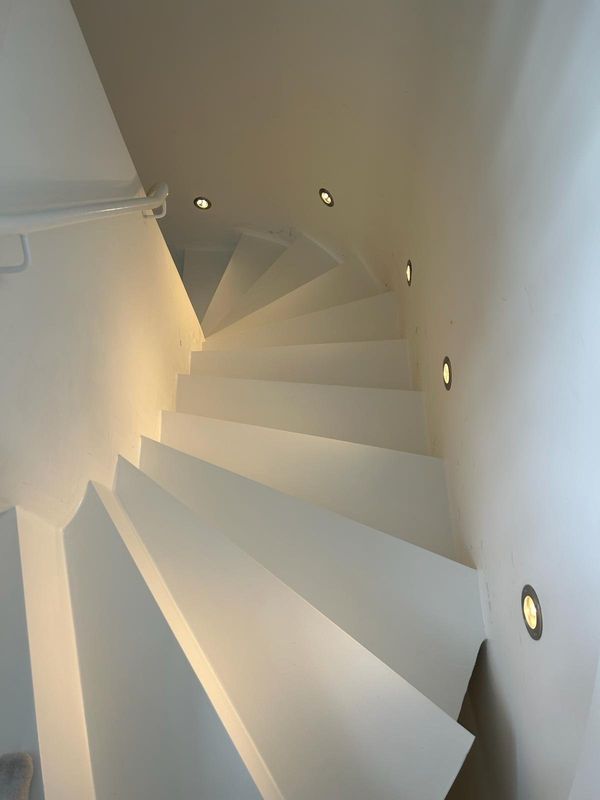

Betreuung nach Absprache
Sie wünschen Unterstützung rund um Ihre Immobilie? Wir klären gemeinsam die gewünschten Aufgaben und halten den vereinbarten Umfang fest.
MEL · HAUSMEISTERSERVICE IN PUCHHEIM
Wir renovieren – und sind auch für die Betreuung Ihrer Immobilie da. Mit unserem Hausmeisterservice unterstützen wir Sie bei den Aufgaben rund um Haus und Objekt, die wir gemeinsam vereinbaren.
Hausmeisterservice anfragen ↗
PERSÖNLICH ABGESTIMMT
Jede Immobilie braucht etwas anderes. Deshalb besprechen wir zunächst, welche Unterstützung Sie suchen.
Sie wünschen Unterstützung rund um Ihre Immobilie? Wir klären gemeinsam die gewünschten Aufgaben und halten den vereinbarten Umfang fest.
Ob Sie Hilfe für einen konkreten Anlass oder eine wiederkehrende Betreuung suchen: Sprechen Sie uns an. Art, Häufigkeit und Termine stimmen wir individuell ab.
Wenn Räume oder Oberflächen neue Frische brauchen, können wir passende Renovierungsarbeiten mit Ihnen besprechen und gesondert planen.
Sie besprechen Ihre Anliegen direkt mit uns – telefonisch oder per E-Mail.
Vereinbarte Aufgaben und Intervalle halten wir schriftlich fest, damit für alle klar ist, was dazugehört.
Wer regelmäßig nach dem Rechten sieht, bemerkt Schäden oft früher. Auffälligkeiten sprechen wir direkt an.
INTERAKTIVBEDARFS-CHECK
Stellen Sie zusammen, welche Unterstützung Sie sich wünschen. Aus Ihrer Auswahl entsteht ein Steckbrief, den Sie direkt als Anfrage senden können.
Der Bedarfs-Check ist eine Hilfe für Ihre Anfrage. Welche Aufgaben wir für Ihr Objekt übernehmen können, prüfen wir nach Ihrer Nachricht und besprechen Umfang, Verfügbarkeit und Kosten vor einer Beauftragung.
Ergebnis als Anfrage übernehmen ↗WENN RENOVIERUNG DAZUKOMMT
Wenn Flächen neue Frische brauchen, planen wir passende Renovierungsarbeiten gesondert mit Ihnen.
SO LÄUFT ES AB
Nutzen Sie den Bedarfs-Check oder rufen Sie uns an.
Wir sehen uns Ihr Objekt an und klären offene Fragen.
Aufgaben, Intervalle und Ansprechpartner werden vereinbart.
Die vereinbarten Aufgaben beginnen zum abgestimmten Termin.
WAS BRAUCHEN SIE?
Wo befindet sich das Objekt, welche Aufgaben stehen an und wie oft benötigen Sie Unterstützung?
Mit diesen Angaben können wir besprechen, welche Leistungen wir für Sie übernehmen können. Den konkreten Umfang, die Verfügbarkeit und die Kosten klären wir vor einer Beauftragung.
Betreuung besprechen ↗HÄUFIGE FRAGEN
Der Umfang richtet sich nach Ihrem Objekt und den Aufgaben, die wir mit Ihnen vereinbaren. Schicken Sie uns Ihre Wünsche, damit wir prüfen können, welche Leistungen wir übernehmen können.
Ja. Nennen Sie uns die gewünschten Aufgaben und Zeitabstände. Wir besprechen Verfügbarkeit, Termine und eine passende Vereinbarung.
Ja, Sie können beides gemeinsam anfragen. Wir besprechen den Bedarf und legen fest, welche Betreuungs- und Renovierungsarbeiten zum vereinbarten Umfang gehören.
Sprechen Sie uns gern an. Wir prüfen anhand Ihrer Angaben, ob und in welchem Umfang wir die Betreuung übernehmen können.
Das hängt von Umfang und Verfügbarkeit ab. Geben Sie im Bedarfs-Check Ihren Wunschzeitpunkt an – wir melden uns mit einem Vorschlag.
DER NÄCHSTE SCHRITT